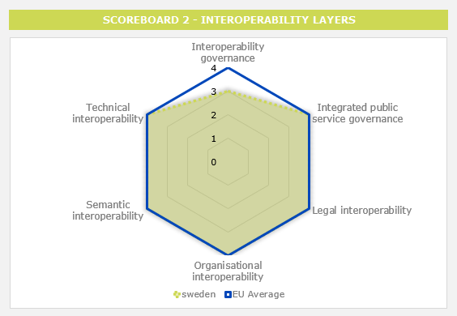
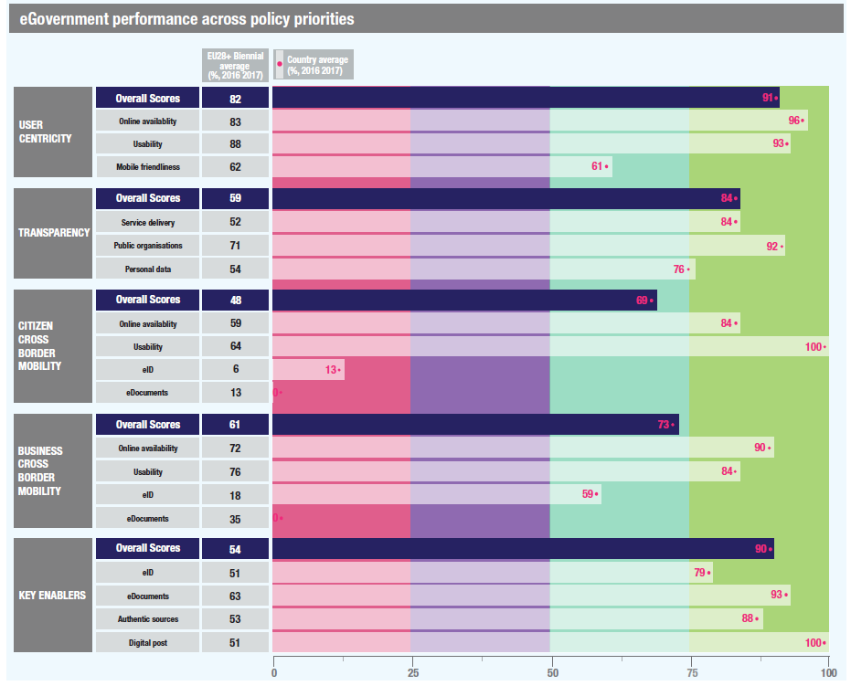
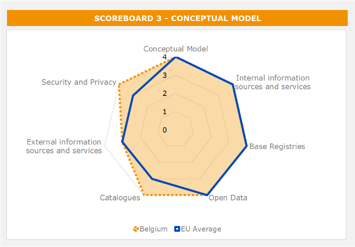

ISA2
Digital Government Factsheet 2019
Iceland
ISA2
Digital Government Highlights 6
Digital Government Political Communications 7
Digital Government Legislation 12
Digital Government Governance 14
Digital Government Infrastructure 17
Digital Government Services for Citizens 22
Digital Government Services for Businesses 29
Population: 384 450 inhabitants (2018)
GDP at market prices: 21 706 million Euros (2017)
GDP per inhabitant in PPS (Purchasing Power Standard EU 28=100): 130 (2017)
GDP growth rate: 4% (2017)
Inflation rate: 0.7% (2018)
Unemployment rate: 2.7% (2018)
General government gross debt (Percentage of GDP): No data available
General government deficit/surplus (Percentage of GDP): No data available
Area: 103 000 km²
Capital city: Reykjavik
Official EU language: Icelandic
Currency: ISK
The following graphs present data for the latest Generic Information Society Indicators for Iceland compared to the EU average. Statistical indicators in this section reflect those of Eurostat at the time the Edition is being prepared.
Percentage of individuals using the internet for interacting with public authorities in Iceland | Percentage of individuals using the internet for obtaining information from public authorities in Iceland |
| |
Percentage of individuals using the internet for downloading official forms from public authorities in Iceland | Percentage of individuals using the internet for sending filled forms to public authorities in Iceland |
The graph below is the result of the latest eGovernment Benchmark report, which monitors the development of eGovernment in Europe, based on specific indicators. These indicators are clustered within four main top-level benchmarks:
These top-level benchmarks are measured using a life-events (e.g. mystery shopping) approach. Eight life events are included in the overall eGovernment performance score. Four of these life events were measured in 2013, 2015 and 2017 and the other four were measured in 2012, 2014, 2016, and again in 2018. The life events measured in 2017 were Regular business operations, Moving, Owning and driving a car and Starting a small claims procedure. The life events measured in 2018 are Business start-up, Losing and finding a job, Family life and Studying.

Source: eGovernment Benchmark Report 2018 Country Factsheet
Digital Government Political Communications
Iceland 2020 forms the basis for the Icelandic government's policy-making and planning in specific areas over the coming years. The main goal of the Iceland 2020 plan regarding eGovernment and the Information Society is that by 2020, Iceland should be in the top 10 nations on the eGovernment development index and eParticipation Index measured by the United Nations.
Digital Government Legislations
There have been no changes in Digital Government Legislation in the reporting year.
Digital Government Governance
Registers Iceland is the Icelandic State’s registry of base registries, in particular it gathers data on individuals and real estate. Registers Iceland records certain basic information on all persons who are or have been domiciled in Iceland and Icelandic citizens residing abroad, as well as changes to their status.
Digital Government Infrastructure
Iceland has signed an agreement with the NIIS Institute (Nordic Institute for Interoperability Solutions), which co-operates with Estonia and Finland, to start using Straumurinn data line. Straumurinn is based on the Estonian X-Road platform and it will foster synergies between the different IT systems of public bodies by streamlining and automating the processes for data exchange.
Digital Government Services for Citizens and Businesses
There have been no changes in Digital Government Services for Citizens and Businesses in the reporting year.
SAFT: Community, Family and Technology (2018)
The Action Plan aims at continuing to support a Safer Internet Centre (SIC) in Iceland providing:
The three components of the SIC cooperates by setting up a single Advisory Board with national stakeholders including relevant industry partners. The SIC also is closely operating with children and young people through a dedicated Youth Platform.
The beneficiaries are further developing their role of providing generic services and closely coordinate their activities with the core service platform and with the Insafe and INHOPE networks.
Policy and action plan 2017-2019Statistical analyses, assessments and evaluations are imperative for measuring the impact of research and innovation and they serve as the basis for evidence-based policy-making. The overarching aim of the Science and Technology Council Policy is that investment in research and development will reach 3% of GDP by the year 2024. The action plan 2017-2019 foresees ten main actions to be undertaken, divided in five thematic areas:
Financial Plan 2019-2023
Government ministries have identified the following topics as areas to focus on for the 2019-2023 Financial Plan:
The main objective is to make public services the principle of self-regulation and to ensure that the administrative data is safe, timely and only recorded once, as well as protected by the best technical solutions at any given time. Statistics are based on reliable data, serve the needs of informed discussion and decision-making in society and fulfil international commitments. Public sector services are based on information systems that meet ever-changing needs and the technical demands of the public and industry. The public and industry can access open-source data in one place with unsolicited information, monitor various issues discussed in the administration, and participate in the transparent reporting process for draft proposals, regulations and policy papers. Public data will be free of charge and reusable as much as possible.
Iceland 2020 - Governmental policy statement for the economy and community
Iceland 2020 forms the basis for the Icelandic government's policy-making and planning in specific areas over the coming years. The monitoring of the 20 yardsticks that have been defined in this chapter on economic and development objectives, as well as the previous chapter on social objectives, give some indication of the progress made in moving Iceland along on the path to welfare, knowledge and sustainable development. The Prime Minister's Office is responsible for monitoring Iceland 2020 in relation to other ministries and ensuring that the policies, plans, tasks and measures that are detailed below are followed. The Prime Minister's Office will assess the status of the twenty objectives on an annual basis.
The main goal of the Iceland 2020 plan regarding eGovernment and the Information Society is that by 2020, Iceland be in the top 10 nations on the eGovernment development index and eParticipation Index measured by the United Nations. The previous Icelandic Government Policy on Information Society 2008-2012 will be the base used for further development and will be integrated in the general new plan.
Iceland Rural Fibre Project
The Iceland Rural Fibre Project is a short-term Government initiative to bring 100 Mb/s wired internet to 99.9% of households and businesses nationwide by the end of 2020. The State contributes funding for the project, and local governments can apply for subsidies that depend on their own contributions. The project is overseen by the Telecommunications Fund. Fibre network installation outside population centres also plays a role in upgrading core communications systems nationwide, which is a prerequisite for greater reliability, coverage, and data transmission speeds across all mobile networks outside densely populated areas.
No political communication was adopted in this field to date.
No political communication was adopted in this field to date.
National Cyber Security Strategy 2015 - 2026
The strategy is intended to address the protection of important elements of the infrastructure in Iceland and the responses called for to protect against the growing cyber-threats, which pose a hazard to the government, the economy and the ordinary citizen.
The first Action Plan, set for the period 2015 – 2018, together with the strategy shall be examined and reviewed as necessary, at minimum every four years. The measures planned for the first period call for a special effort to establish broad collaboration needed between the government and relevant stakeholders. The four key objectives of the current Icelandic cybersecurity strategy are the following:
A special Cyber Security Council has been appointed, consisting of representatives of the government bodies involved in the implementation of the strategy, in order to put the cyber security strategy into action. The stakeholders (public and private entities) shall be represented by another established body – the Cyber Security Forum.
As part of the National Cyber Security Strategy, society's knowledge of the possibilities and uses of information technology shall be enriched, with the purpose of applying technology in the optimal manner for creating employment, improving services, effectiveness in all respects and increasing democratic participation. The focus shall be on building up knowledge among students, managers and other State or municipal personnel, and in groups who have limited acquaintance of information technology.
eGovernment policy 2013-2016
Regarding base registries, data accessibility and reusability, the eGovernment policy 2013-2016 includes an action to provide base registry (master) data as open data. Some registries make their date available at no cost on the open data portal such the Land Registry, Address Registry, Map of Estimated Farmland Registry, etc.
Other registries provide access to certain data on specific websites free of charge. On the Registers Iceland website, users can view single property data by looking up the address or the property number. On the site of the Directorate of Internal Revenue, users can access information on businesses.
Another relevant strategy linked to accessing data in Iceland’s base registries is the ePower Expansion - create, connect, and participate. Icelandic State and Municipal Policy on the Information Society 2013-2016, which states that the necessity of access to public sector information and databases should be a priority with the aim of giving the general population opportunities to monitor public sector activities while encouraging innovation and the reuse of public sector information for commercial purposes. It continues stating: “The general public, businesses and stakeholders shall have easy access to non-personal information and files kept by the State or municipalities. The basis for State and municipal policies shall be openly accessible data, providing a single portal for accessing such data or databases.” At the beginning of 2013, digital maps and spatial data held by the National Land Survey of Iceland were made available free of charge.
No political communication was adopted in this field to date.
No political communication was adopted in this field to date.
A unique IT supplier for the entire public sector
On the 1 June 2019, Iceland became the first country to sign a contract which will make Microsoft the sole IT supplier for its entire public sector. The country teamed up with a single IT partner for the provision of a common cloud platform, Microsoft 365.
The introduction of Microsoft 365 will consolidate all services into a single license, as well an increased communication and collaboration between institutions.
“The contract with Microsoft marks a paradigm shift in the way we understand the public sector and public services. As more countries digitize their public services, they experience an increase in demand from other institutions and employees as well as from citizens. This increases the need to streamline and strengthen services, products and processes, not to mention the level of security. Iceland is not afraid of being a front-runner, and that is quite admirable,” said Peter Quarfordts Skov, Director, Public Sector at Microsoft Denmark & Iceland.
Even if the decision could lead to an increased interoperability among different public bodies, the risk of a vendor lock-in is higher.
National Interoperability Framework
National research on improving interoperability indicated that further interoperability could only be achieved through comprehensive harmonisation and communication between systems, concluding the need for strategies and corresponding frameworks. Hence, Iceland published a draft National Interoperability Framework that has been made available for public consultation and started the process of setting up the NIF with a focus on the technical level of interoperability, followed by semantic and organisational interoperability. Several parties are involved in the establishment of the framework including all government levels, the public institutions and private entities. Iceland believes in a broad stakeholder engagement to actively stimulate the usage of open standards. It has a specific process to define these standards in collaboration with standardisation bodies, together with all interested parties in all layers of government and the public. It is expected that the NIF is to play a bigger role in the next policy on the Information Society.
Since access to data and information is still in silos, Iceland is further developing plans to reform public administration and services. In the program Iceland 2020, there is a particular focus on exploring ideas for multi-functional state and municipal service centres at a local level (one-stop shops).
No political communication was adopted in this field to date.
Information Act
The Information Act was approved by the parliament at the end of 2012 and came into force on 1 January 2013. Its objective is to guarantee transparency in government administration and the handling of public interests, inter alia with the purpose of strengthening the following:
The right to information and the freedom of expression;
Possibilities for the public to participate in a democratic society;
The restraints exercised by the media and the public on government authorities;
Possibilities for the media to communicate information on public affairs;
Public confidence in government administration.
This act applies to all government activities and private entities owned by the state (51% of shares or more).
After the adoption of Act No. 140/2012, the older Information Act No. 50/1996 only applies to municipalities with fewer than 1 000 citizens until 1 January 2016.
Administrative Procedures Act
On 10 March 2003, the Administrative Procedures Act (No.37/1993) was amended (No.51/2003), adding a special chapter on the electronic handling of matters by the Public Administration. Through this modification, general obstacles to the development of electronic administration were removed. While formulating the amendment, the committee in question was guided by the concept of equivalent value, and also emphasised the need to maintain technical impartiality. The alteration involved permission for the electronic handling of governmental administration cases, but not an obligation.
Re-use of Public Sector Information (PSI)
Conditions on the re-use of public sector information are partly covered by the Information Act (No.50/1996). The Act defines public access to information and the restrictions on the right to information. In relation to the European Directive on the re-use of Public Sector Information (PSI Directive, 2003/98/EC), the Act includes almost all items with the exception of access and re-use of information through electronic means such as databases.
Regulation on electronic signatures
The Regulation No. 780/2011 on electronic signatures applies to the information to be included in qualified certificates, requirements of certification service providers who issue qualified certificates, requirements for secure signature creation devices, the mechanism for the registration, notifications and disclosures of certification service providers and the mechanisms of regulation of certification service providers issuing qualified certificates.
An electronic signature made using a qualified certificate does not constitute confirmation of the time of signature creation.
Act on Electronic Signatures
Based on a similar EC Directive, article 4 of the Act on Electronic Signatures, No. 28/2001 stipulates that fully qualified electronic signatures shall have the same force as handwritten signatures. Furthermore, it stipulates that other electronic signatures can be legally binding. Supporting legislation comes from the Electronic Commerce Act, 2002 and the Administrative Procedures Act, as amended in 2003.
Act on the Protection of Privacy as regard the Processing of Personal Data
The Act on the Protection of Privacy as regards the Processing of Personal Data (No. 77/2000) was passed in 2000 and came into effect on 1 January 2001. The act implements the EC Data Protection Directive (95/46/EC) and deals with how the protective principle relates to data quality, and presents criteria for the legitimacy of data processing. The act applies to any automated processing of personal data and to manual processing of such data if it is, or is intended to become, a part of a file.
No political communication was adopted in this field to date.
Act on Public Purchasing
The older Public Procurement Act was replaced with Act No. 84/2007, a new comprehensive Act on Public Purchasing. The Act incorporated the eProcurement provisions of European Directives 2004/17/EC and 2004/18/EC. Rules on the use of electronic transmission were liberalised regarding public procurement and dynamic procurement systems; the Act furthermore regulated the use of eAuctions. Other provisions of the previous legislation, such as the rules of procedure, remained largely unchanged.
Act on Electronic Commerce and other Electronic Services
The Act on Electronic Commerce and other Electronic Services, No. 30/2002 states that electronic contracts are equivalent to written contracts and that electronic services provided by a service provider established in Iceland shall conform to Icelandic law on the establishment and operation of the service. The Act does not apply to electronic services relating to taxation. However, in this field, there are two main acts applying to electronic commerce: the Income Tax Act, No. 90/2003, and the Value Added Tax Act, No. 50/1988. According to the former, a legal entity is taxable in Iceland if it is domiciled in this country. The latter introduced several special provisions concerning imports.
No legislation was adopted in this field to date.
No legislation was adopted in this field to date.
Network Society Council
The role of the Network Society Council is, amongst other things, to follow the implementation of government and network security policies for the period 2015-2026. In cooperation with stakeholders, it will set up a Network and Information Society Consultation Group. The Council will, after consulting, formulate action proposals, regularly write reports on their performance, and make government proposals for actions as required. At the same time, the Network Security Council is consulted on issues relating to network and information security.
Ministry of the Interior
The general organisational approach to eGovernment in Iceland is based on a centralised policy and strategy but decentralised implementation. The Ministry of the Interior is responsible for the formulation of the policy on the information society and eGovernment. There is an extensive collaboration and consultation with other governmental bodies and actors in the information society sphere.
Sigurður Ingi Jóhannsson Minister of Transport and Local Government
Contact details: Ministry of the Interior Sölvhólsgata 7 150 Reykjavik Tel.: +354 545 9000 Fax: +354 552 7340 E-mail: N/A |
Information Society Taskforce
The policy is coordinated and supervised by a special project management team, the 'Information Society Taskforce' (or eGovernment Taskforce), operating under the auspices of the Ministry of the Interior. The Taskforce focuses on eGovernment issues in the policy and coordinates Central eGovernment and Local eGovernment projects. This includes assisting public institutions and Association of local Authorities in their efforts towards achieving the policy’s main objectives. The Chairman of the Taskforce leads the efforts to increase the use of IT to improve eServices to citizens and to increase the effectiveness of government services.
 | Guðbjörg Sigurðardóttir Director of Information Society Affairs
Contact details: Ministry of the Interior Sölvhólsgata 7 150 Reykjavik Tel.: +354 545 9000 Fax: +354 552 7340 E-mail: gudbjorg.sigurdardottir@irr.is |
Government offices and public bodies
eGovernment implementation is highly decentralised and is undertaken by the Government offices (ministries) and other public bodies according to their role(s) and subject(s). All ministries and two representatives from local government form the eGovernment Taskforce. In the current eGovernment strategy: ePower Expansion, the future vision is to make sure that public services are built with democracy, efficiency and the needs of people and industry in mind. A solid knowledge of information technology, along with access to government data, will promote innovation and business growth. The general public will affect public-sector decisions by helping to prepare them through online, open, and transparent consultations.
No responsible organisations were reported to date.
Registers Iceland
Registers Iceland is the Icelandic State’s registry of base registries, in particular it gathers data on individuals and real estate. Registers Iceland records certain basic information on all persons who are or have been domiciled in Iceland and Icelandic citizens residing abroad, as well as changes to their status. While, the real estate register contains all the basic information about countries, land and waste, as well as structures that are on them. Here you can find real estate and fire insurance assessments, the square meter of property, and the fixed number property. Registers Iceland gathers information from citizens notification, as well as public bodies one.
No responsible organisations were reported to date.
Icelandic Data Protection Authority (DPA)
The Icelandic Data Protection Authority (DPA) consists of a Board and a Secretariat. A managing director (Data Protection Commissioner) is in charge of the daily management of the Secretariat. The Icelandic Data Protection Authority exercises surveillance over processing of data to which the Act on the Protection of Privacy as regards the Processing of Personal Data applies. The decisions made by the Icelandic Data Protection Authority are final and may not be brought before any other administrative authority. The decisions on the other hand can be taken to the courts, and complaints concerning the administration of the Authority can be addressed to the Parliamentary Ombudsman.
Ministry of the Interior
As mentioned, Icelandic eGovernment policy and strategy are highly centralized but the implementation is more decentralized. The policymaking and implementation is conducted in cooperation between the ministries and the Association of Local Authorities.
No responsible organisations were reported to date.
Association of Local Authorities
The country is divided into 79 municipalities (local authorities), which are independent but under the supervision of the Ministry of Interior (formed on 1 January 2011 when the Ministry of Justice and Human Rights and the Ministry of Transport, Communications and Local Government merged). Their responsibilities lie on social welfare, health, education, cultural matters and infrastructure. The Association of Local Authorities in Iceland is the forum for co-operation between the local authorities.
No responsible organisations were reported to date.
No responsible organisations were reported to date.
No responsible organisations were reported to date.
No responsible organisations were reported to date.
Government Offices of Iceland (www.government.is)
This governmental portal is a website that links and redirects to all Icelandic ministries. It contains information and online facilities for all government departments (ministries, directorates, etc.).
Island
This portal played a central role in the new policy formulation for the Information Society for 2013 - 2017. It has three main functions:
It operates as a government information and service portal. It provides easy access to information on public services and to a large number of public forms.
It operates as a toolbox. Tools which are of use to all public bodies have been developed on the island.is website. These include centralised authentication, electronic document delivery (C2G and B2G), electronic document distribution (G2C and G2B) and an electronic service layer.
Since May 2011 it has provided a 'My pages' services. There people obtain individualised access to information about themselves in key registers owned by the authorities and access to documents sent to them electronically by public bodies.
EUGO
This portal is the online point of single contact for people who want to start a business or provide services in Iceland. The portal is organised according to the European Services Directive which obliges EU/EES countries to simplify all procedures involved in starting and carrying out a service activity. All information and necessary forms are available in both Icelandic and English.
Iceland
The portal is supported by the Ministry of Foreign Affairs as the official gateway to Iceland for foreigners. The portal contains a plethora of information on Iceland, its nature, society, trading and investment opportunities, as well as links to many related websites. The portal has absorbed the site www.iceland.org, which used to function as the official gateway to the Icelandic Foreign Service, and thus it provides information about Icelandic embassies abroad.
Multicultural Information Centre
The Multicultural Information Center is a portal designed to provide assistance to immigrants through an extensive number of services. Its fundamental role is to facilitate communications between individuals from different backgrounds, and to enhance the services provided to foreign citizens residing in Iceland and to those interested in moving to Iceland. Among other services, the Multicultural Center offers assistance through telephone in English, Polish, Serbian/Croatian and Thai. The portal is the responsibility of the Ministry of Welfare, established on 1 January 2011.
UT-Web of Information Technology
UT-Web of Information Technology is a comprehensive portal that provides useful information on IT matters. This portal is mainly targeted towards people working in IT-departments and managers in public institutions. Nevertheless, since the portal is of a general nature, it can be of use to anyone who seeks information on information technology and eGovernment. The Department of Administrative and Social Development at the Prime Minister’s Office is responsible for the portal. The UT-Web has been operating since January 2006.
Iceland has a large-scale infrastructure for telecommunications networks and services. Reykjavík offers one of the largest optical-fibre networks currently available in any capital city; mobile phone penetration is among the highest in the world.
The Telecommunications Fund was established by Act No. 132/2005, with the view to allocate financial resources for projects aimed at developing telecommunications infrastructure, at contributing to the safety and competitiveness of the Icelandic nation in the field of telecommunications, and at achieving further goals, insofar as such projects are provided for in the Telecom Policy Statement and are considered unlikely to be undertaken on market terms.
FS Net
FS Net is a specialised high-speed network linking all upper secondary schools and lifelong education centres in Iceland. FS Net is structured for fast, independent data transport and builds on the IP protocol. All upper secondary schools and continuing education centres are connected through a 100-Mbps link, with branch locations of continuing education centres connected by 2-Mbps links. The network supports multicast and traffic prioritisation and is also connected to the University and Research Network (RH Net).
Straumurinn
On the 30 November 2018, Iceland signed an agreement with the NIIS Institute (Nordic Institute for Interoperability Solutions), which co-operates with Estonia and Finland, to start using Straumurinn data line. Straumurinn is based on the Estonian X-Road platform and it has been already implemented and tested in Estonia and Finland.
This system will foster synergies between the different IT systems of public bodies by streamlining and automating the processes for data exchange. Straumurinn is the Icelandic way to efficiency and security in information exchange. After the set-up phase, the first services will be available through the X-Road environment, enabling government agencies and ministries to exchange information through a standardized and secure solution. Straumurinn will also allow a more secure and flexible data exchange with businesses, as well as a more efficient communication. Straumurinn improves the interoperability between IT systems of different public organizations, so information can be provided only once, and the government can easily retrieve it. The large amount of data, together with a comprehensive management plan, are the prerequisites for effective and transparent public services.
Íslandsrót Certification Authority
Íslandsrót (Iceland Root) is the certification authority, responsible for issuing and distributing eCertificates. It is controlled by the Ministry of Finance and stands at the top of the organisation pyramid of electronic identification, constituting the source of trust in the system of distributed electronic certificates. On the basis of 'Iceland Root', intermediate certificates can be issued and used as a certification while waiting for the issue of the final certificates. The final certificates can be tied to a specific person, such as private certificates or employee certificates. Various government departments also issue digital certificates. For example, the 1996 amendment to the Customs Act imposed electronic submissions using digital certificates for all import and export companies.
Rikiskaup
According to the European Commission's 'Digitising Public Services in Europe: Putting ambition into action – 9th Benchmark Measurement' report, Iceland’s eProcurement platform is not available yet, in the sense that Iceland’s government planned to have only one platform, Rikiskaup, the State Trading Centre. However, Rikiskaup already provides eNotification services and it supports further eProcurement development. Buyers can send email to suppliers within the same contract group through Rikiskaup. In addition, some institutions have procurement systems where they can order online from eCatalogues.
eInvoicing
Although national Regulation 505/2013 stipulates the requirements for electronic invoices to be considered legal, there is no legislation mandating the use of eInvoices in B2G public procurement in Iceland. The Declaration of the Ministry of Finance and the Ministry of Economic Affairs of 10 February 2014, however, recommended the use of eInvoices in B2G public procurement from 1 January 2015. Since then, the city of Reykjavik now only accepted eInvoices from economic operators.
In general, the Icelandic State Treasury provides IT solutions for most state agencies and receives eInvoices on their behalf; other agencies are responsible for receiving and processing of their own invoices. However, there is no central eInvoicing platform to connect to.
In 2017, Iceland partnered with the European Commission to launch the action eInvoicing in Iceland. The objective of this Action is to upgrade 10 eInvoicing solutions to compliant with the eInvoicing Directive 2014/55/EU, in particular the new European eInvoicing standard (EN). The following eInvoicing solutions are in the process of being upgraded: Babelway B2B integration Software-as-a-Service; eVerbinding-eConnect; TradeHub by EDI Factory/Celtrino; EHFportal.no by Aksesspunkt; Storecove Platform by Datajust; Edionet by VIADUCT; INTESA European B2B Invoice; Advalvas Invoice Manager Officient; and eefacta Server by Unimaze.
Upon completion of the implementation, the beneficiaries will carry out interoperability and eInvoicing conformance tests. Communication activities will be also be carried out to disseminate the project results at European level and from both the consortium and each entity perspective.ext.
No particular infrastructure in this field was reported to date.
Menntagatt: The Educational Gateway
This portal provides schools with convenient access to information and services on the Internet. Content is being recorded and linked to courses, academic subjects and curriculum goals. The Educational Gateway built on a public-private partnership, is run by a private company and intends to integrate the content and services provided by public and private parties.
Tungutaekni website
An information website maintained by the Icelandic Centre for Language Technology and run jointly by the Institute of Linguistics at the University of Iceland, the School of Computer Science at the Reykjavik University and the Department of Lexicography at the Árni Magnússon Institute for Icelandic Studies. For over 1 000 years, Icelandic has served not only as the language of Icelanders, but as the medium through which one of Europe’s greatest literary treasures was preserved: the medieval sagas. However, since the advent of computers, Icelandic, like many other languages, has found itself under increasing pressure, particularly due to the extensive use of English. One of the main roles of the centre is to collect information on language technology in Iceland and make it available on the Internet to facilitate cooperation among interested parties and the use of available resources.
Icelandic Library Consortium
It runs a union catalogue for Icelandic libraries, known as Gegnir. The company, which was founded in November 2001, is owned by the Icelandic Government and a series of municipalities around the country. Its purpose is to run a central, web-based library system for most of the libraries in Iceland, thus making the best possible use of the country’s modest library and information resources. The contract between Ex Libris and the Consortium of Icelandic libraries assumes that the new library system are used by all or almost every one of the approximately 400 libraries in the country, and that legacy data is added to the new system in steps, based on their existing systems.
Hvar
Hvar.is is the 'Iceland Consortia for eSubscriptions' website - a countrywide access portal to electronic databases and eJournals. It provides information and access to more than 14,000 full-text journals, abstracts of articles from over 6 000 journals and 12 databases to every resident of Iceland, who is connected to a domestic Internet service provider. According to the Icelandic Government’s point of view, the idea of providing nationwide access to databases of electronic bibliographies and full-text journals unites two lines of thought: satisfying the urgent demand of libraries and their users for a diverse set of databases and journals and applying the adopted government policy of equal access for all Icelanders to the information society.
Vísindavefur
The Icelandic Web of Science was established in 2000. It contains information on all aspects of science, covering fields from astronomy to ancient manuscripts. Visitors can find answers to a wide variety of questions; should information be missing they have direct access to experts responsible for maintaining and updating the web. The Visindavefur is supported both by public institutions and private companies.
EUCARIS, EULISSTORK
Iceland is a member of EUCARIS and EULIS, sharing master data cross-border. Additionally, Registers Iceland is a member of the Stork and Stork 2.0 projects, as well as the ELF and e-Sens projects.
Registers Iceland operates a PEPS-broker, built in the Stork project, to retrieve the ID attributes needed for cross-border authentication. It is now upgrading to the e-IDAS node to comply with the e-IDAS Regulation and CEF funding, to federate the Icelandic eID systems to the EU e-ID ecosystem. This will enable the exchange of ID attributes from the Member States’ Population Registries for cross-border identification and authentication.
Current Status
Iceland does not have a complete catalogue of base registries. However, there exists a list of base registries. The administration of the base registries is coordinated by a number of public bodies in Iceland, whereby each base registry handles its respective master data type(s). In particular:
There are also data sharing agreements in place:
The information in this section presents an overview of the basic public services provided to the citizens. These were identified taking inspiration from Your Europe, a website which aims to help citizens do things in other European countries – avoiding unnecessary inconvenience and red tape in regard to moving, living, studying, working, shopping or simply travelling abroad. However, the categories used in this factsheet aim to collect a broader range of information, focusing therefore not only on cross-border services, but also on national services.
The groups of services for citizens are as follows:
Documents you need for travel in Europe | |
Passport | |
Responsibility: | Central Government, Ministry of the Interior |
Website: | |
Description: | The application for a passport is a fully automated electronic procedure where application forms are not needed. |
Multicultural Information Centre | |
Responsibility: | Ministry of Welfare |
Website: | |
Description: | The Multicultural Information Centre is a portal designed to provide assistance to immigrants through an extensive number of services. Its fundamental role is to facilitate communications between individuals from different backgrounds, and to enhance the services provided to foreign citizens residing in Iceland and to those interested in moving to Iceland. Among other services, the Multicultural Centre offers assistance through telephone in English, Polish, Serbian/Croatian and Thai. The portal is the responsibility of the Ministry of Welfare, established on 1 January 2011. |
Working abroad, finding a job abroad, retiring | |
Job search services by labour offices | |
Responsibility: | Central Government, Ministry of Welfare, Directorate of Labour |
Website: | |
Description: | Fully functional job search online service with multilingual information on jobs. All services offer pre-selected jobs related to the profile of the job searcher. Vacancies are automatically published in the European Employment Services Job Mobility Portal. |
Unemployment & benefits | |
Unemployment benefits | |
Responsibility: | Central Government, Ministry of Welfare, Directorate of Labour |
Website: | |
Description: | Citizens apply electronically and follow the entire application procedure through the web. Case handling and decision-making is web based. One exception: The applicant has to show up once, show his/her ID and sign the application. S/he also has to bring some certificates on paper, e.g. certificates from former employees. |
Taxes | |
Income taxes: declaration, notification of assessment | |
Responsibility: | Central Government, Ministry of Finance, Directorate of Internal Revenue |
Website: | |
Description: | Businesses have submitted electronic tax returns since 1997, and individuals since 1999. The system offers online guidance and has pre-entered all data that a tax payer needs to fill in. Rule-based auditing is also in place. Over 90% of the tax payers file electronically. |
Driver’s license | |
Responsibility: | Regional Government, Ministry of the Interior |
Website: | |
Description: | Information is available, enabling citizens to start the procedure in order to obtain a driving licence. |
Registration | |
Car registration (new, used, imported cars) | |
Responsibility: | Central Government, Ministry of the Interior, Road Traffic Directorate |
Website: | |
Description: | Change of ownership must be confirmed through a bank. Payment is also done through the bank. Each partner involved must log into his/her personalised web page at the bank and confirm the change of ownership. When all partners have confirmed the change of ownership and payment has been completed, all partners receive a confirmation email. |
Consumer protection / Consumer issues | |
Responsibility: | Registers Iceland |
Website: | |
Description: | The portal operates as government information and service portal. It provides easy access to information on public services and to a large number of public forms. In the area of consumer protection, the following areas are covered: advice and legal assistance (complaints and guarantees, consumer advice, etc.), pricing and price labels, product safety, and purchases and contracts. |
Documents and formalities | |
Announcement of moving (change of address) | |
Responsibility: | Central Government, Ministry of the Interior |
Website: | |
Description: | A form (PDF), available on the web, can be filled in electronically, then printed out and sent by mail or fax. |
Certificates (birth, marriage): request and delivery | |
Responsibility: | Central Government, Ministry of the Interior, Multicultural and Information Centre |
Website: | http://www.mcc.is/english/eng-administration/registers-iceland/ |
Description: | Request for a certificate can be sent by email, or by a special enquiry form. |
Criminal Record Certificate | |
Responsibility: | District Commissioners |
Website: | N/A |
Description: | If a person lives in Iceland, s/he should apply in person at the District Commissioner (Syslumadur) in the corresponding municipality (see Special notes and considerations for complete address). If a person lives outside of Iceland, s/he must provide a written authority to a representative in Iceland to request the certificate on his/her behalf by fax or email. |
Declaration to the police (e.g. in case of theft) | |
Responsibility: | Central Government, Ministry of the Interior, Icelandic Police |
Website: | |
Description: | The police scan incoming mail or inquiries submitted online through the standard inquiry form and responds either by phone, or by visiting a given address. This has to be followed up by a formal written report. |
Housing (building and housing, environment) | |
Responsibility: | Local Government (Municipalities) |
Website: | |
Description: | Most municipalities have PDF forms available on the web. |
School | |
Educational Gateway | |
Responsibility: | Institute of Education (Menntamálastofnun) |
Website: | |
Description: | Iceland's 'Educational Gateway' features catalogued educational content and searches related to curricular goals, teaching instructions, pictures, interactive examinations, and other educational topics (in Icelandic, with some information in English and Danish). |
Public libraries (availability of catalogues, search tools) | |
Responsibility: | Central Government and Municipalities forming Gegnir, 'The Icelandic Library Consortium', Ministry of Education, Science and Culture |
Website: | |
Description: | The Icelandic Library Consortium runs a union catalogue for Icelandic libraries, known as Gegnir. The company's purpose is to run a central, web-based library system for most of the libraries in Iceland. |
University | |
Enrolment in higher education/university | |
Responsibility: | Central Government, Ministry of Education, Science and Culture |
Website: | http://www.hi.is/; http://www.unak.is/; http://www.bifrost.is/; http://www.ru.is/ |
Description: | Information only. |
Researchers | |
Information and assistance to researchers | |
Responsibility: | EURAXESS Iceland |
Website: | |
Description: | EURAXESS Iceland provides information and assistance to mobile researchers – by means of the web portal and with the support of the national EURAXESS Service Centres. The portal contains practical information concerning professional and daily life, as well as information on job and funding opportunities. |
Research funding support | |
Responsibility: | The Icelandic Centre for Research (Rannis) |
Website: | |
Description: | Rannis administers the main public competitive funds in the fields of research, innovation, education and culture in Iceland. Rannis coordinates and promotes Icelandic participation in European cooperation programmes, such as Horizon 2020, Erasmus+ and Creative Europe, as well as other international programmes. Information on available national funding opportunities for the researchers can be found on the website, as well as open calls for proposals. |
Health related services (interactive advice on the availability of services in different hospitals; appointments for hospitals) | |
Responsibility: | Central Government, Ministry of Welfare |
Website: | http://www.fsa.is (North region); http://www.fsi.is (North West region); http://www.hsa.is (East region); http://www.hve.is/ (West region); http://www.hjarta.is (Hjartavernd, The Icelandic Heart Association) |
Description: | At the national, regional and local hospitals and health care centres, the patient has to make an appointment by phone. Booking online is done by the private company Hjartavernd. |
Medical costs (reimbursement or direct settlement) | |
Responsibility: | Central Government, Ministry of Welfare, Social Insurance Administration |
Website: | http://www.tr.is/ (Information) |
Description: | Discount cards are sent out automatically to those who are entitled (have reached a certain level of total cost). This is based on information from private practicing doctors, hospitals and health care centres. If people have paid too much, they will be automatically reimbursed; that sum will be deposited in a bank account. |
Certificates (birth, marriage): request and delivery | |
Responsibility: | Central Government, Ministry of the Interior, Multicultural and Information Centre |
Website: | http://www.mcc.is/english/eng-administration/registers-iceland/ |
Description: | Request for a certificate can be sent by email, or by a special enquiry form. |
Child allowances | |
Responsibility: | Central Government, Ministry of Finance, Directorate of Internal Revenue |
Website: | |
Description: | This service is automatically granted by the tax authorities after receipt of annual tax declaration. |
Shopping | |
Consumer protection / Consumer issues | |
Responsibility: | Registers Iceland |
Website: | |
Description: | This portal operates as the government information and service portal. It provides easy access to information on public services and to a large number of public forms. In the area of consumer protection, the following areas are covered: advice and legal assistance (complaints and guarantees, consumer advice, etc.), pricing and price labels, product safety, and purchases and contracts. |
Financial products and services | |
Savings and finances | |
Responsibility: | Registers Iceland |
Website: | |
Description: | This portal operates as the government information and service portal. It provides easy access to information on public services and to a large number of public forms. In the area of financial information, two areas are covered: finances (payment difficulties, security net) and taxes (personal taxes, taxes on goods and services). |
Unfair treatment | |
Consumer protection | |
Responsibility: | Registers Iceland |
Website: | |
Description: | This portal operates as the government information and service portal. It provides easy access to information on public services and to a large number of public forms. In the area of consumer protection, the following areas are covered: advice and legal assistance (complaints and guarantees, consumer advice, etc.), pricing and price labels, product safety, and purchases and contracts. |
Consumer dispute resolution | |
Consumer issues | |
Responsibility: | Registers Iceland |
Website: | |
Description: | The portal operates as the government information and service portal. It provides easy access to information on public services and to a large number of public forms. In the area of consumer protection, the following areas are covered: advice and legal assistance (complaints and guarantees, consumer advice, etc.), pricing and price labels, product safety, and purchases and contracts. |
The information in this section presents an overview of the basic public services provided to the Businesses. These were identified taking inspiration from Your Europe, a website which aims to help citizens do things in other European countries – avoiding unnecessary inconvenience and red tape in regard to moving, living, studying, working, shopping or simply travelling abroad. However, the categories used in this factsheet aim to collect a broader range of information, focusing therefore not only on cross-border services, but also on national services.
The groups of services for businesses are as follows:
Intellectual property | |
Patents | |
Responsibility: | Icelandic Patent Office under the Minister of Industries and Innovation |
Website: | |
Description: | Information on the patent, trademark and design processes in Iceland are freely available at the web portal of the Icelandic Patent Office. Furthermore, for instance, it offers the following online services: application forms for the application for national patents, links to application forms for European patents, and others. |
Annual accounts | |
Submission of data to statistical offices | |
Responsibility: | Central Government, Ministry of Economic Affairs, Statistics Iceland |
Website: | |
Description: | Statistic Iceland has direct access to information from tax authorities (i.e. VAT, tax withholding, social contribution, and income tax) and direct access to import and export registers of custom authorities. Information on wages and prices is directly sent from the largest databases of private and public companies; electronic forms are available for collecting data on accommodation (password protected). |
Start-ups | |
EUGO portal | |
Responsibility: | Unternehmens Service Portal, Federal Ministries (municipalities) |
Website: | |
Description: | This portal is the online point of single contact for people who want to start a business or provide services in Iceland. The portal is organised according to the European Services Directive which obliges EU/EES countries to simplify all procedures involved in starting and carrying out a service activity. All information and necessary forms are available in both Icelandic and English. |
Registration of a new company | |
Responsibility: | Central Government, Ministry of Finance, Directorate of Internal Revenue |
Website: | |
Description: | General information and forms to download in order to register a company. More information can be obtained in the relevant legislation on Establishing a company in Iceland (1 May 2006). |
Excise duties | |
Corporate tax: declaration, notification | |
Responsibility: | Central Government, Ministry of Finance, Directorate of Internal Revenue |
Website: | |
Description: | Businesses have been allowed to submit electronic tax returns since 1997, and individuals since 1999. A fully interactive system is operational. |
VAT | |
VAT: declaration, notification | |
Responsibility: | Central Government, Ministry of Finance, Directorate of Internal Revenue |
Website: | |
Description: | The service is fully interactive. |
Public contracts | |
Public procurement / eProcurement | |
Responsibility: | Central Government, Ministry of Finance, The State Trading Centre |
Website: | |
Description: | Information and forms to download. Rikiskaup provides eNotification services and it supports further eProcurement development. Buyers can send an email to suppliers within the same contract group through Rikiskaup. In addition, some institutions have procurement systems where they can order online from eCatalogues. |
Social security and health | |
Social contributions for employees | |
Responsibility: | Central Government, Ministry of Finance, Directorate of Internal Revenue |
Website: | https://www.rsk.is/english/individuals/allowances-deductions-and-credits/ |
Description: | There are two ways of declaring social contributions for employees (withheld tax and social security contribution), a web form for small enterprises (less than 30 employees) and, for companies which can generate an XML-document in their salary systems, a means of securely transmitting that form to the tax authorities. In both cases, following a verification procedure, an invoice is generated and transmitted to the banks. The invoice can then be settled electronically. |
Web portal of Administration of Occupational Safety and Health in Iceland (AOSH) | |
Responsibility: | Administration of Occupational Safety and Health in Iceland (AOSH) |
Website: | |
Description: | The Administration of Occupational Safety and Health (AOSH) is an independent institution under the Ministry of Social Affairs. On their website, a form for reporting the work-related accidents to the AOSH (in Icelandic) can be found as well as further information regarding health and safety at the workplace. |
Product rules and specifications | |
Product safety in Iceland | |
Responsibility: | Registers Iceland |
Website: | |
Description: | The portal operates as government information and service portal. It provides easy access to information on public services and to a large number of public forms. In the area of product safety, the following areas are covered: product liability, safety supervision and the CE Mark. |
Chemicals (REACH) | |
REACH (Registration, Evaluation, Authorisation and Restriction of Chemicals, EU Regulation no 1907/2006) Helpdesk | |
Responsibility: | The Environment Agency of Ireland |
Website: | |
Description: | The Environment Agency is the competent authority for the application of a number of related EU acts. The Environment Agency is responsible for the helpdesk for REACH and CLP. Manufacturers, importers, exporters, distributors, downstream users and others should be able to get key information regarding the chemical’s legislation in Iceland on this webpage or via their e-mail or telephone contacts as enlisted on the portal. |
EU Ecolabel | |
Environment-related permits (incl. reporting) | |
Responsibility: | Central Government, Ministry for the Environment, The Environment Agency |
Website: | |
Description: | Information and forms to download. |
No public services were reported in this domain to date.
Solving disputes with customers | |
Customs declarations (e-Customs) | |
Responsibility: | Central Government, Ministry of Finance, Directorate of Customs |
Website: | |
Description: | An interactive online service which allows users to receive and send answers to customs' declarations and use digital signatures as a safety measure. Features include import/export procedures for businesses, fully automated customs procedures (enabling up to 100 % of all declarations to become electronic). A full electronic case management procedure is available. |
The Digital Government Factsheets
The factsheets present an overview of the state and progress of Digital Government European countries.
There are published on the Joinup platform, which is a joint initiative by the Directorate General for Informatics (DG DIGIT) and the Directorate General for Communications Networks, Content & Technology (DG CONNECT). This factsheet was not validated from the related country.
 The Digital Government Factsheets are prepared for the European Commission by Wavestone
An action supported by ISA²
ISA² is a EUR 131 million programme of the European Commission which develops digital solutions that enable interoperable cross-border and cross-sector public services, for the benefit of public administrations, businesses and citizens across the EU.
ISA² supports a wide range of activities and solutions, among which is the National Interoperability Framework Observatory (NIFO) action.
ISA² solutions can be used free of charge and are open source when related to IT.
Contact ISA²
Follow us
 @
@